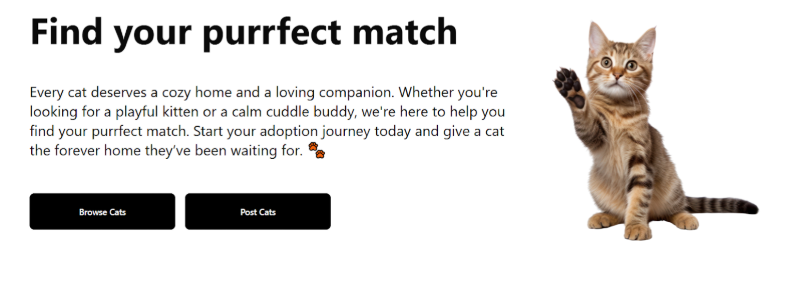

MeowMatch is a full-stack web application designed to connect people with cats in need of adoption. Using the PetFinder API, the platform displays real-time listings of adoptable cats based on a user’s location. Users can also post their own cats for adoption, allowing for a community based adoption space.
On the backend, I built the API layer with Node.js and Express.js, handling routes for searching, posting, and retrieving adoption listings. I integrated the PetFinder API and implemented filtering so users could easily find cats nearby. Data for user accounts and adoption posts was stored in MongoDB. I tested endpoints with Postman and deployed the backend on AWS Lightsail, troubleshooting MongoDB connectivity issues during production setup.
The project was built collaboratively by a six-person team, with my primary focus on the backend architecture and data flow.
